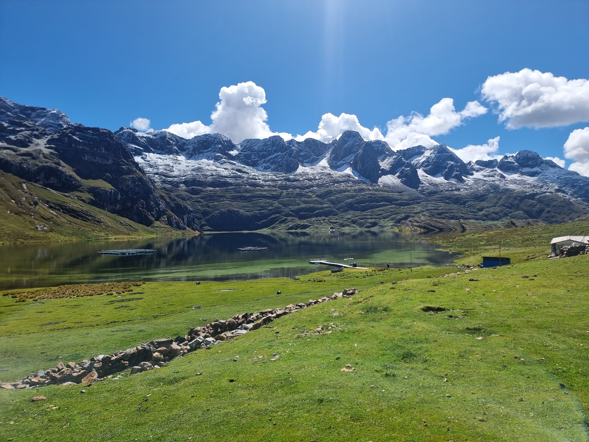
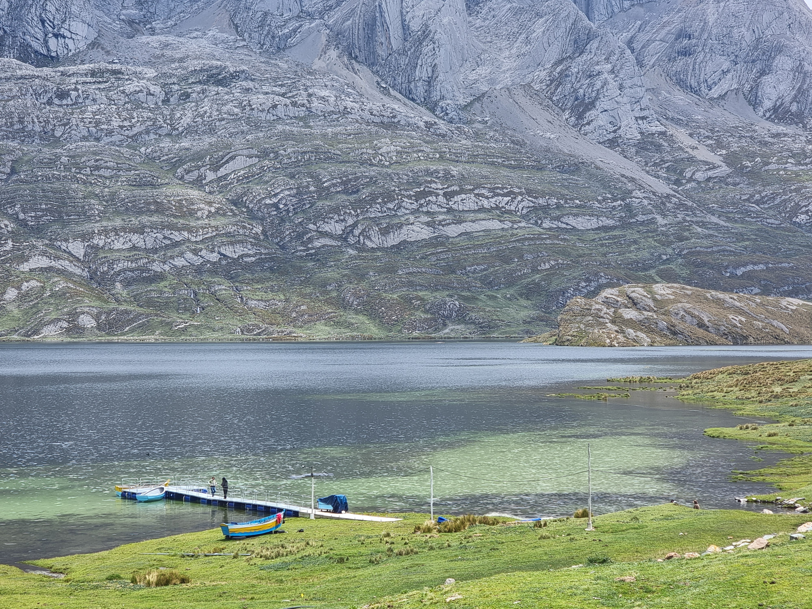

Trucha frita
Del criadero al sartén el mismo día

San Marcos · Áncash · A 20 min de Antamina
Restaurante de altura con trucha arcoíris de crianza propia — del criadero a tu plato en minutos. Hospedaje rústico, cochera segura y venta al por mayor en San Marcos, Áncash.
Gastronomía
El motor de nuestra cocina es la acuicultura: incubamos ovas importadas y criamos trucha arcoíris en jaulas flotantes en medio de la laguna. Siempre hay trucha fresca para el Restaurante Laguna Canrash.
Los platos más pedidos son trucha frita, chicharrón de trucha, ceviche de trucha y sudado de trucha. También servimos pollo y carne de res, aunque en menor proporción.
Somos un restaurante genuinamente rústico, con tres ambientes:
Tenemos un muelle habilitado y seguro donde muchos visitantes toman sus mejores fotos. Por falta de personal, costos y seguridad, no ofrecemos paseos en bote.

Cuatro preparaciones que definen nuestra cocina
Del criadero al sartén el mismo día

Textura crujiente, sabor intenso

Frescura marina en altura

Caldo aromático y reconfortante
Experiencia
Nuestro muelle es un punto seguro para caminar, contemplar el agua y tomar fotos. Muchos visitantes guardan aquí sus mejores recuerdos del viaje.


Más que un restaurante
Pensados para quienes trabajan y transitan por la zona minera y la ruta altoandina.
 Cochera segura
Cochera segura
Ideal para trabajadores de Antamina que dejan sus vehículos por 10 días o más. Espacios cubiertos con techo y estacionamiento amplio al aire libre.


Habitaciones en módulos de madera y acogedoras casitas de adobe. Pensado para transportistas de ruta y personal de empresas de la zona.
S/ 30
por noche
Ambiente tranquilo, cálido y rodeado de paisaje andino.

Distribución
Trucha arcoíris fresca, fileteada o entera, directamente del criadero. Precios escalonados según volumen para restaurantes, distribuidores y negocios de la región.

Volumen total de compra
El viaje es parte de la experiencia
Paisajes que transforman el camino en una aventura altoandina inolvidable.

Restos fósiles visibles a lo largo del camino, un viaje al pasado prehistórico.

Avistamiento de flamencos rosados en la laguna Conococha, rumbo a Canrash.

Cordillera nevada que acompaña el recorrido con panoramas de postal.

Formación rocosa con perfil de cara de gorila, parada obligatoria para la foto.


Raíces en los Andes
En los años 70, una familia pastoril adquirió las tierras alrededor de la laguna para criar ovejas y vacas, cuando el valle aún no tenía el valor que tiene hoy. Ese legado de trabajo en altura sigue vivo en el paisaje.
En el año 2000, la llegada de Antamina y la construcción de la carretera hacia la mina transformaron el entorno y abrieron nuevas posibilidades para quienes vivían y trabajaban en la zona.
La segunda generación, con formación en ingeniería agrícola, emprendió en acuicultura: incubación de ovas importadas y crianza de trucha arcoíris en jaulas flotantes. Fue un camino de constancia frente a la adversidad, sin depender de apoyos externos para sostener el sueño.
La ganadería familiar permanece como parte del paisaje y la subsistencia local, aunque dejó de ser la actividad principal desde los años 90. Hoy cuida el territorio y mantiene viva la tradición del pastoreo en altura.
Por estar alejados del pueblo más cercano, la familia acondicionó por sí misma agua, desagüe y electricidad con paneles solares. En 2023 llegó la conectividad continua por internet satelital, lo que permitió modernizar la operación del restaurante y los servicios.
2023
Conectividad en altura
Internet satelital de alta velocidad para atender mejor a visitantes y clientes.
2025
Programa Procompite
Ganadores del fondo distrital de San Marcos, lo que impulsó la ampliación del restaurante y los ambientes.
Hoy somos un destino rústico y auténtico: trucha del día, cocina honesta y hospitalidad andina.
Eica S.R.L. · RUC 20530753396
Distrito de San Marcos, provincia de Huari,
departamento de Áncash, Perú.
A 20 minutos de la minera Antamina.
957 878 409
WhatsApp directo
© Eica S.R.L. — Laguna Canrash. Todos los derechos reservados.